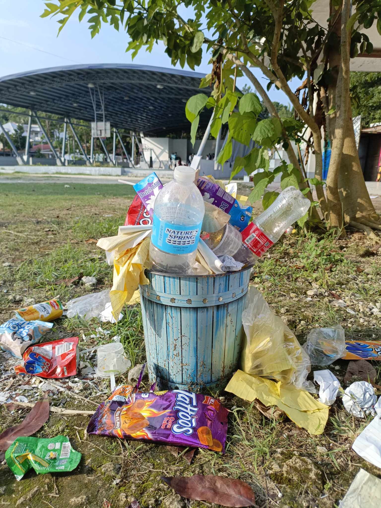

Clean Campuses, Bright Futures: The Vital Role of Cleanliness in University Life

Author/Writer

CTU Danao Campus
In the bustling world of academia, where ideas flourish and futures are shaped, the importance of cleanliness often goes unnoticed. Yet, a sparkling campus is more than just eye candy; it’s a foundation for health, learning, and personal growth. Imagine walking through vibrant, well-maintained spaces that inspire creativity and foster a sense of belonging. Cleanliness is the unsung hero of student life, enhancing not just physical well-being but also mental clarity and focus. In this article, we’ll explore why a clean campus is essential for creating an environment where students can thrive and how everyone can play a role in maintaining it.
Health and Hygiene: Cleanliness is essential for maintaining the health of students and staff. Dirty environments can harbor bacteria, viruses, and allergens, increasing the risk of illness. Regular cleaning of classrooms, libraries, restrooms, and common areas helps prevent the spread of infectious diseases and promotes overall well-being.
Enhanced Learning Experience: A clean and organized environment positively impacts students' ability to focus and learn. Cluttered and dirty spaces can be distracting and overwhelming, hindering academic performance. A tidy campus fosters a sense of calm and encourages students to engage more fully in their studies.
Psychological Well-Being: Studies show that cleanliness can influence mental health. A clean and orderly environment promotes feelings of comfort and safety, while a dirty or disorganized space can lead to stress and anxiety. Maintaining cleanliness on campus can create a more positive atmosphere for all students.
Sense of Pride and Ownership: A clean campus cultivates a sense of pride among students and staff. When individuals see their university taking cleanliness seriously, they are more likely to respect and take care of their surroundings. This collective responsibility fosters a sense of community and ownership.
Strategies for Maintaining Cleanliness
Regular Cleaning Schedules: Universities should establish routine cleaning schedules for all campus facilities. This includes classrooms, libraries, restrooms, and outdoor spaces. Regular cleaning not only keeps the campus looking good but also ensures that it remains hygienic.
Waste Management Initiatives: Implementing effective waste management practices is essential for maintaining cleanliness. Providing clearly labeled bins for recycling, composting, and trash encourages students to dispose of waste responsibly. Awareness campaigns can educate students about the importance of reducing waste and keeping the campus clean.
Student Involvement: Engaging students in cleanliness initiatives can foster a sense of community and responsibility. Organizing clean-up events, awareness campaigns, and workshops can encourage students to take an active role in maintaining the campus. Collaboration between students and staff can lead to creative solutions for keeping the university clean.
Maintenance of Outdoor Spaces: Cleanliness should extend beyond indoor facilities. Regular maintenance of outdoor spaces, such as gardens, lawns, and walkways, enhances the university’s aesthetic appeal. Green spaces provide students with a refreshing environment to relax and study, making cleanliness in these areas vital.
Education and Awareness: Raising awareness about the importance of cleanliness can encourage students to adopt good habits. Educational campaigns, posters, and workshops can highlight the impact of cleanliness on health and well-being, motivating students to take pride in their surroundings.